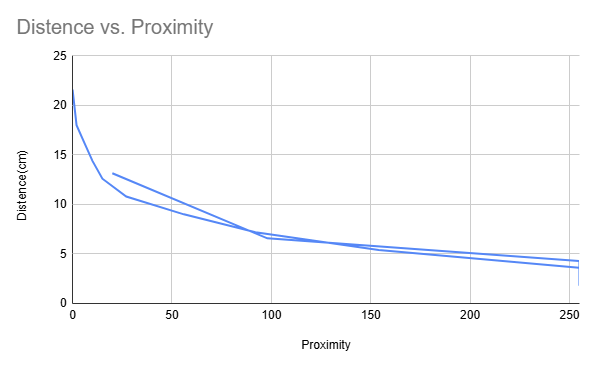
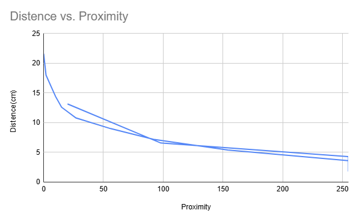

Project in Action
Proximity Sensor
Videos
Project in Action
Flappy-Bird Game
Explanation
For this sensor, I initially thought I had a LiDAR module, but I later realized it was only a proximity sensor. I began by calibrating the proximity readings to actual distance values (see chart for reference). I displayed the live proximity data on an OLED screen during this process. In the chart, I graphed distance (in cm) as a function of the sensor's proximity value. The proximity readings ranged from a maximum of 255 (when the object was closest to the sensor) to a minimum of 0 (when it was farthest). These values corresponded to a maximum measured distance of 21.6 cm and a minimum accurate distance of about 4.29 cm. Kinda unrelated, I also created a Flappy Bird–kind of game where the closer your hand is to the proximity sensor, the higher the player moves on the screen—the goal being to avoid obstacles. The game is alos equiped with a timmer that recordes teh longest run time as a high score.
Images
 

Arduino Calibration Code
#include <Wire.h>
#include <Adafruit_GFX.h>
#include <Adafruit_SSD1306.h>
#include <Adafruit_APDS9960.h>
#define SCREEN_WIDTH 128
#define SCREEN_HEIGHT 64
Adafruit_SSD1306 display(SCREEN_WIDTH, SCREEN_HEIGHT, &Wire, -1);
Adafruit_APDS9960 apds;
void setup() {
Wire.begin(21, 22); // ESP32 default I2C pins
Serial.begin(115200);
delay(1000); // Wait for serial
// Initialize OLED
if (!display.begin(SSD1306_SWITCHCAPVCC, 0x3C)) {
Serial.println("OLED not found");
while (true);
}
display.clearDisplay();
display.setTextSize(1);
display.setTextColor(SSD1306_WHITE);
display.setCursor(0, 0);
display.println("OLED Ready");
display.display();
delay(1000);
// Initialize APDS9960
if (!apds.begin()) {
Serial.println("APDS9960 not found");
display.clearDisplay();
display.setCursor(0, 0);
display.println("APDS9960 Error");
display.display();
while (true);
}
apds.enableProximity(true);
display.clearDisplay();
display.setCursor(0, 0);
display.println("APDS9960 Ready");
display.display();
delay(1000);
}
void loop() {
// Read proximity
uint8_t proximity = apds.readProximity();
Serial.print("Proximity: ");
Serial.println(proximity);
// Show on OLED
display.clearDisplay();
display.setCursor(0, 0);
display.setTextSize(2);
display.print("Prox: ");
display.println(proximity);
display.display();
delay(300);
}
Flappy Bird Code
#include <Wire.h>
#include <SparkFun_APDS9960.h>
#include <Adafruit_GFX.h>
#include <Adafruit_SSD1306.h>
#include <EEPROM.h>
// Display setup
#define SCREEN_WIDTH 128
#define SCREEN_HEIGHT 64
Adafruit_SSD1306 display(SCREEN_WIDTH, SCREEN_HEIGHT, &Wire, -1);
// Proximity sensor
SparkFun_APDS9960 apds;
// Game variables
int playerY = 32;
const int playerX = 10;
int obstacleX = 128;
int obstacleY = random(0, 56);
unsigned long lastObstacleMove = 0;
unsigned long obstacleSpeed = 50;
unsigned long startTime;
unsigned long lastFrameTime = 0;
unsigned long frameDelay = 30;
int highScore = 0;
// Load high score from EEPROM
void loadHighScore() {
EEPROM.get(0, highScore);
if (highScore < 0 || highScore > 10000) highScore = 0; // corrupt protection
}
// Save high score to EEPROM
void saveHighScore(int score) {
if (score > highScore) {
highScore = score;
EEPROM.put(0, highScore);
}
}
void setup() {
Serial.begin(115200);
Wire.begin();
// Display
if (!display.begin(SSD1306_SWITCHCAPVCC, 0x3C)) {
Serial.println("OLED not found");
while (true);
}
display.clearDisplay();
display.setTextSize(1);
display.setTextColor(WHITE);
// APDS9960
if (!apds.init()) {
Serial.println("APDS9960 not found");
while (true);
}
apds.enableProximitySensor();
randomSeed(analogRead(0));
loadHighScore();
startTime = millis();
}
void drawPlayer() {
display.fillRect(playerX, playerY, 8, 8, WHITE);
}
void drawObstacle() {
display.fillRect(obstacleX, obstacleY, 8, 8, WHITE);
}
bool checkCollision() {
return !(playerX + 8 < obstacleX || playerX > obstacleX + 8 ||
playerY + 8 < obstacleY || playerY > obstacleY + 8);
}
void loop() {
unsigned long now = millis();
if (now - lastFrameTime < frameDelay) return;
lastFrameTime = now;
// Read proximity
uint8_t proximity;
if (apds.readProximity(proximity)) {
// Map proximity (0–255) to screen Y position (0–56)
playerY = map(proximity, 0, 255, 56, 0); // Closer hand = higher Y
}
// Move obstacle
if (now - lastObstacleMove > obstacleSpeed) {
obstacleX -= 4;
lastObstacleMove = now;
if (obstacleX < -8) {
obstacleX = 128;
obstacleY = random(0, 56);
}
}
// Draw everything
display.clearDisplay();
drawPlayer();
drawObstacle();
// Score
int score = (now - startTime) / 1000;
display.setCursor(0, 0);
display.print("Time: ");
display.print(score);
display.setCursor(70, 0);
display.print("Hi: ");
display.print(highScore);
display.display();
if (checkCollision()) {
saveHighScore(score);
display.clearDisplay();
display.setCursor(20, 20);
display.setTextSize(2);
display.print("Game Over");
display.setTextSize(1);
display.setCursor(10, 50);
display.print("Time: ");
display.print(score);
display.setCursor(70, 50);
display.print("Hi: ");
display.print(highScore);
display.display();
delay(3000);
// Reset game
startTime = millis();
obstacleX = 128;
obstacleY = random(0, 56);
}
}